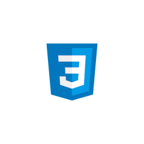

Quem sou eu?
Me chamo Augusto, tenho 23 anos, sou desenvolvedor web formado como técnico de Informática pelo SENAI Jandira e estudante de Sistemas para Internet na (FIAP - Faculdade de Informática e Administração Paulista). Gosto de programar, criar sites com design arrojado e também amo musculação e música.
Comecei no mundo da Tecnologia da Informação aos 16 anos, e a partir daí venho desenvolvendo minhas skills e meu portifólio também. Clique abaixo para fazer o download do meu currículo em PDF.
Habilidades - Skills
HTML
80%
